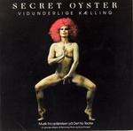

| Artist: | Secret Oyster |
| Title: | Vidunderlige Kaelling |
| Label: | Lasers Edge LE1043 |
| Length(s): | 47 minutes |
| Year(s) of release: | 1975/2005 |
| Month of review: | [05/2006] |
| 1) | Intro | 2.11 |
| 2) | Stjernerne Pa Gaden | 5.43 |
| 3) | Sirenerne | 4.58 |
| 4) | Astarte | 6.32 |
| 5) | Solitude | 4.07 |
| 6) | Tango - Bourgoisie | 2.43 |
| 7) | Bellevue | 3.23 |
| 8) | Valse Du Soir | 1.57 |
| 9) | Outro | 5.09 |
| 10) | Sleep Music (bonus) | 6.15 |
| 11) | Circus Sax (bonus) | 5.02 |
| 12) | Intro To Act II (bonus) | 0.49 |
The subtle play of the band continues on Sirenerne, with its repetitive,s softly siren like keyboards. But then, the rock band asserts itself, as the drumjs finally come into play. The groove is strongly funky here, and we are talking jazz rock here, seventies American style. Towards the end, the band cranks up the guitar volume even a bit more.
Astarte on the other hand has elements of Indian music, but the pace and rhythmic ressemble Kraftwerk. Halfway, the meandering sax comes in, but the Indian music element stays strong, with the sitar vying with the sax. Solitude brings us back to the solo piano of the opening track.
It will not surprise you that Tango - Bourgoisie is indeed a tango, making for some lightheartedness. The synths sound a bit cheap here, trite. This is typically something that was okay in the seventies, but now...
Bellevue is the second funky track in which the drummer takes the lead in the sound spectrum and bass and guitar add to the groove. The guitar melody sounds familiar, it would not surprise me if this is indeed a recap. The song also has Latin-American influences. On Valse Du Soir, the influences are taken from other countries, those around the Mediterranean, a bit of French and a bit of Greek, in fact.
Outro is not the usual short track, but reaches the five minute mark. Thematic material returns on this track, with the band taking more the bombastic road with meandering guitar work, and some excellent thematic play on the sax.
After the Outro, we come to the three bonus tracks that lift the album to acceptable length. Sleep Music is the first of these. This is a repetitive and rather dreamy track, with the sax softly meandering at the fore, while the others stay even more subdued in the back. On Circus Sax, there is even more of Karsten Vogel, or, actually, I should say less of the other instrumentalists. Indeed, it is only him playing here. Intro To Act II is the short closer of this cd, and slightly chaotic and bleepy.